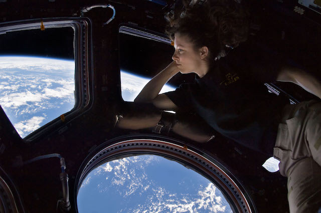

SPACE
"From out there on the Moon, international politics look so petty. You want to grab a politician by the scruff of the neck and drag him a quarter of a million miles out and say, 'Look at that, you son of a bitch.'"
- Edgar Mitchel, Apollo 14 astronaut, speaking in People magazine on 8 April 1974.
"Outer space, or just space, is the void that exists between celestial bodies, including Earth.[1] It is not completely empty, but consists of a hard vacuum containing a low density of particles, predominantly a plasma of hydrogen and helium as well as electromagnetic radiation, magnetic fields, neutrinos, dust, and cosmic rays. The baseline temperature, as set by the background radiation from the Big Bang, is 2.7 kelvins (K) (−270.45 °C; −454.81 °F).[2] Plasma with a number density of less than one hydrogen atom per cubic metre and a temperature of millions of kelvins in the space between galaxies accounts for most of the baryonic (ordinary) matter in outer space; local concentrations have condensed into stars and galaxies. In most galaxies, observations provide evidence that 90% of the mass is in an unknown form, called dark matter, which interacts with other matter through gravitational but not electromagnetic forces.[3][4] Data indicates that the majority of the mass-energy in the observable universe is a poorly understood vacuum energy of space which astronomers label dark energy.[5][6] Intergalactic space takes up most of the volume of the Universe, but even galaxies and star systems consist almost entirely of empty space."
ALIENS
"The concept of extraterrestrial life, and particularly extraterrestrial intelligence, has enjoyed a major cultural impact, chiefly including works of science fiction. Over the years, science fiction both communicated scientific ideas and influenced public interest and perspectives of extraterrestrial life. One shared space is the debate over the wisdom of attempting communication with possible extraterrestrial intelligence: Some encourage aggressive methods to try for contact with intelligent extraterrestrial life, whereas others argue that it might be dangerous to actively call attention to Earth."
CINEMA
"The word "cinema," short for cinematography, is often used to refer to the industry of films and filmmaking or to the art of filmmaking itself. The contemporary definition of cinema is the art of simulating experiences to communicate ideas, stories, perceptions, feelings, beauty or atmosphere by the means of recorded or programmed moving images along with other sensory stimulations."